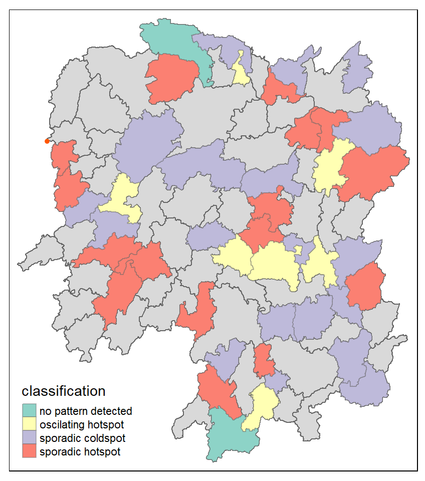
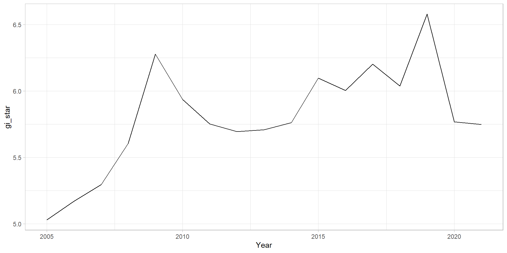
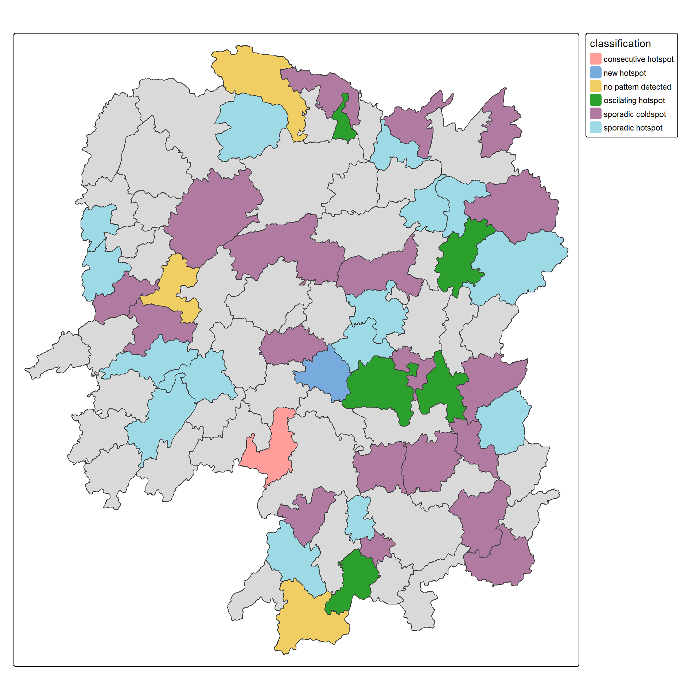
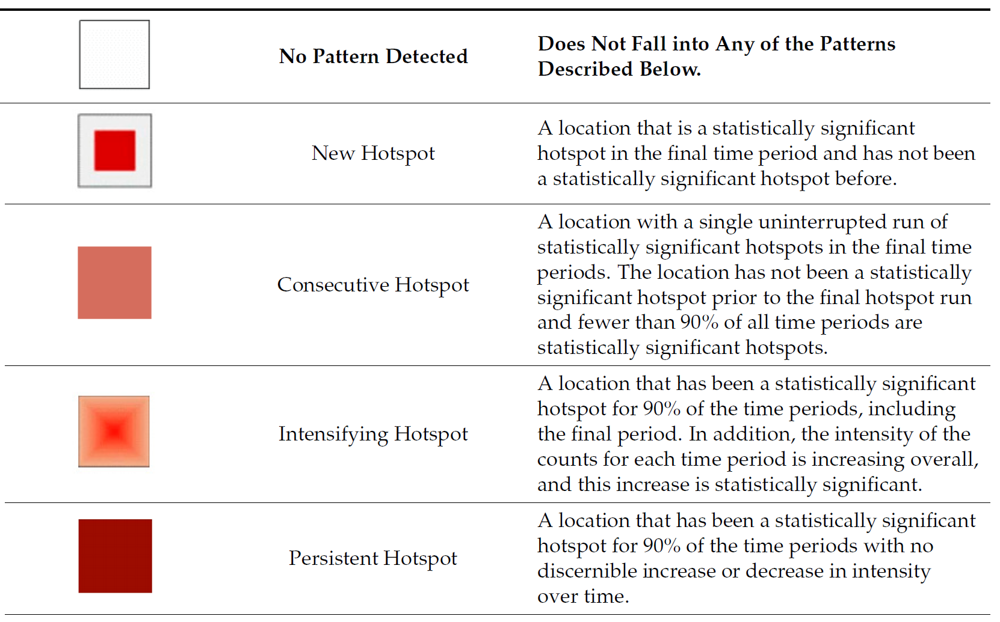
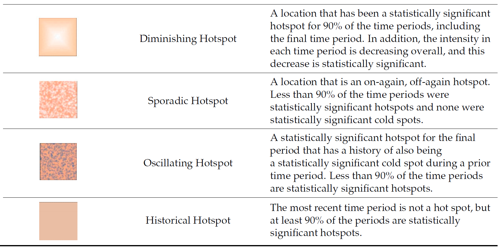
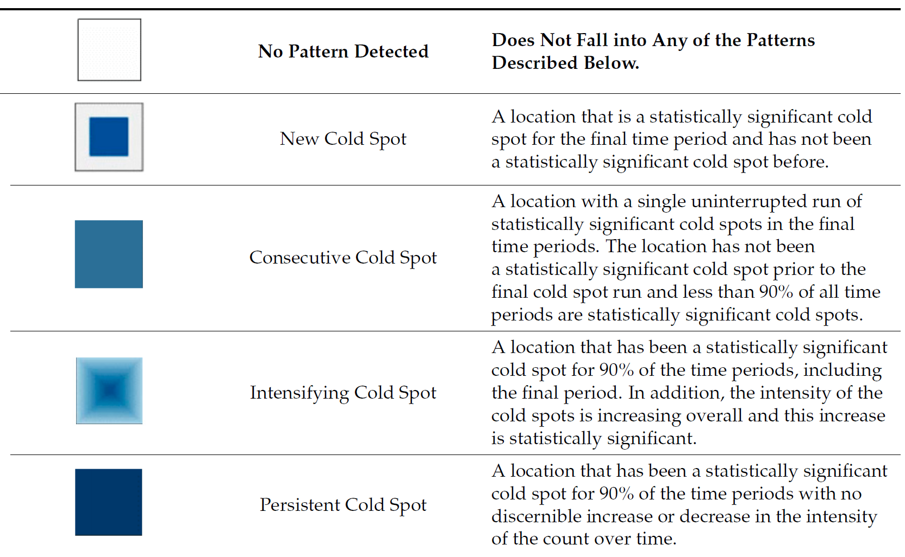
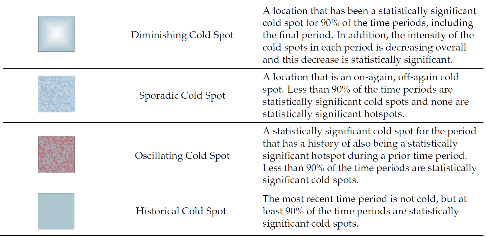

School of Computing and Information Systems,
Singapore Management University
2026-09-26
Emerging Hot Spot Analysis (EHSA) is a spatio-temporal analysis method for revealing and describing how hot spot and cold spot areas evolve over time. The analysis consist of four main steps:
Important
It is highly recommended to read Emerging Hot Spot Analysis before you continue the exercise.

As usual, p_load() of pacman package will be used to check if the necessary packages have been installed in R, if yes, load the packages on R environment.
Six R packages are need for this in-class exercise, they are: sf, sfdep, tmap, plotly, and tidyverse.
For the purpose of this in-class exercise, the Hunan data sets will be used. There are two data sets in this use case, they are:
Before getting started, reveal the content of Hunan_GDPPC.csv by using Notepad and MS Excel.
In the code chunk below, st_read() of sf package is used to import Hunan shapefile into R.
Reading layer `Hunan' from data source
`C:\tskam\ISSS626-AY2026-27Aug\In-class_Ex\In-class_Ex05\data\geospatial'
using driver `ESRI Shapefile'
Simple feature collection with 88 features and 7 fields
Geometry type: POLYGON
Dimension: XY
Bounding box: xmin: 108.7831 ymin: 24.6342 xmax: 114.2544 ymax: 30.12812
Geodetic CRS: WGS 84Before getting started, students must read this article to learn the basic concept of spatio-temporal cube and its implementation in sfdep package.
In the code chunk below, spacetime() of sfdep ised used to create an spatio-temporal cube.
Next, is_spacetime_cube() of sfdep package will be used to verify if GDPPC_st is indeed an space-time cube object.
The TRUE return confirms that GDPPC_st object is indeed an time-space cube.
Next, we will compute the local Gi* statistics.
The code chunk below will be used to identify neighbors and to derive an inverse distance weights.
Things to learn from the code chunk above
activate() of dplyr package is used to activate the geometry contextmutate() of dplyr package is used to create two new columns nb and wt.set_nbs() and set_wts()
set_nbs() or set_wts().Note that this dataset now has neighbors and weights for each time-slice.
We can use these new columns to manually calculate the local Gi* for each location. We can do this by grouping by Year and using local_gstar_perm() of sfdep package. After which, we use unnest() to unnest gi_star column of the newly created gi_starts data.frame.
A monotonic series or function is one that only increases (or decreases) and never changes direction. So long as the function either stays flat or continues to increase, it is monotonic.
H0: No monotonic trend
H1: Monotonic trend is present
Interpretation
Important
You are encouraged to read Mann-Kendall Test For Monotonic Trend to learn more about the concepts and method of Mann-Kendall test..
With these Gi* measures we can then evaluate each location for a trend using the Mann-Kendall test. The code chunk below uses Changsha county.
Next, we plot the result by using ggplot2 functions.

In the above result, sl is the p-value. With reference to the results, we will reject the hypothesis null and infer that a slight upward trend.
We can replicate this for each location by using group_by() of dplyr package.
# A tibble: 6 × 6
County tau sl S D varS
<chr> <dbl> <dbl> <dbl> <dbl> <dbl>
1 Anhua 0.191 0.303 26 136. 589.
2 Anren -0.294 0.108 -40 136. 589.
3 Anxiang 0 1 0 136. 589.
4 Baojing -0.691 0.000128 -94 136. 589.
5 Chaling -0.0882 0.650 -12 136. 589.
6 Changning -0.750 0.0000318 -102 136. 589.We can also sort to show significant emerging hot/cold spots
# A tibble: 6 × 6
County tau sl S D varS
<chr> <dbl> <dbl> <dbl> <dbl> <dbl>
1 Shuangfeng 0.868 0.00000143 118 136. 589.
2 Xiangtan 0.868 0.00000143 118 136. 589.
3 Xiangxiang 0.868 0.00000143 118 136. 589.
4 Chengbu -0.824 0.00000482 -112 136. 589.
5 Dongan -0.824 0.00000482 -112 136. 589.
6 Wugang -0.809 0.00000712 -110 136. 589.Lastly, we will perform EHSA analysis by using emerging_hotspot_analysis() of sfdep package. It takes a spacetime object x (i.e. GDPPC_st), and the quoted name of the variable of interest (i.e. GDPPC) for .var argument. The k argument is used to specify the number of time lags which is set to 1 by default. Lastly, nsim map numbers of simulation to be performed.
In the code chunk below, ggplot2 functions is used to reveal the distribution of EHSA classes as a bar chart.
Figure above shows that sporadic cold spots class has the high numbers of county.
In this section, you will learn how to visualise the geographic distribution EHSA classes. However, before we can do so, we need to join both hunan and ehsa together by using the code chunk below.
Next, tmap functions will be used to plot a categorical choropleth map by using the code chunk below.




